День 1 — Черногория (Подгорица) → Словения (Любляна)
- 27 марта 2026 (пятница)
- ✈️ Подгорица 14:25 → Любляна 15:30 (~1,5 ч, ~ €80/чел = €160 на двоих) 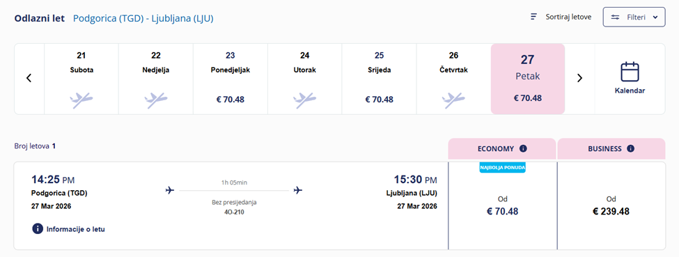
- Хостел: ibis Styles Ljubljana The Fuzzy Log — €38 + €6 tax = €44
Double Bed Cabin with Shared Bathroom — Upper Level
Адрес: 9 Miklošičeva cesta, Ljubljana — Google Maps 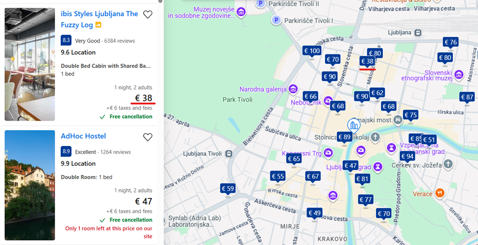
Пешеходный маршрут (≈ 4–5 км, 3–4 часа)
- 1
Хостел (Miklošičeva 9)
- 2
Площадь Прешерна — 5 мин пешком. Памятник поэту, вид на Тройной мост.
- 3
Тройной мост — переход к старому городу; фото-точка.
- 4
Центральный рынок и Мост Драконов — свежие фрукты/выпечка; символ города.
- 5
Фуникулёр к замку — подъём 15–20 мин или фуникулёр (~€2,20); смотровая площадка.
- 6
Люблянский замок — подъём 15–20 мин или фуникулёр (~€2,20); смотровая площадка.
- 7
Старый город — Mestni trg, фонтан Роба, террасы кафе.
- 8
Набережная Любляницы — кафе, бары, художники, вечером атмосферно.
- 9
Парк Тиволи — большой зелёный парк.
Где поесть (≈ €90-120/двоих за день)
- Gostilna Sokol — štruklji, jota, суп в хлебе. (~€40–55)
- Druga Violina — национальные блюда, уютно. (~€30–40)
- Cafetino — отличный кофе в центре. (~€15–20)
- Central Market Street Food — быстрые перекусы, свежие продукты. (~€20–25)
Итоги дня — расходы (на двоих)
Перелёт Podgorica → Ljubljana€160
Проживание: Fuzzy Log (1 ночь)€44
Питание (~€45-60/чел/день)€90-120
Фуникулёр к замку (по желанию)~€4.40
Непредвиденные расходы€0-100
Итого за день≈ €294 – 428
Примечание: последний пункт опционален — зависит от выбора
(пешком/фуникулёр).
День 2 — Любляна → Блед → Венеция (Местре)
- 28 марта 2026 (суббота)
- 🚌 Любляна → Блед (≈ 1 ч 15 мин, ~€6–8/чел = €12–16 на двоих) 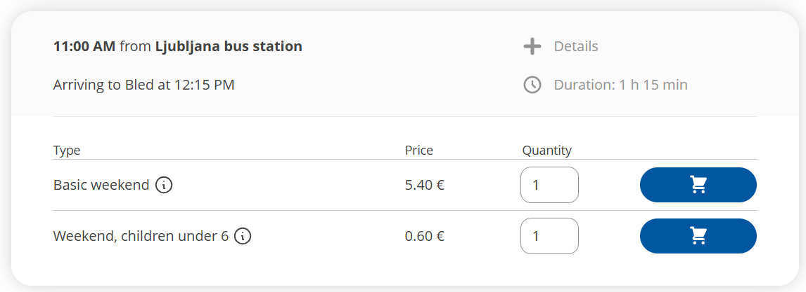
- 🚆 Блед → Любляна → Venezia Mestre (≈ 3,5 ч, ~€60–80/двое)
- Отель/хостел в Mestre: ≈ €100 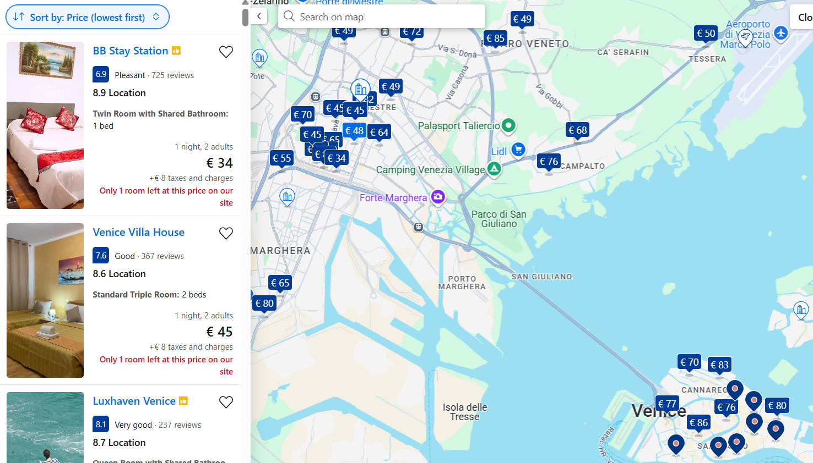
Примерный маршрут дня
- Чекаут из Fuzzy Log Вещи можно оставить в luggage room
- Перекус рядом (например, Cafetino) Кофе + круассан/сендвич — ~€12–18
- Пешком до Ljubljana Bus Station ≈600 м от хостела
- Автобус Ljubljana → Bled ≈1 ч 15 мин · €6–8/чел
- Прогулка по озеру Bled Фото-стопы, 3–4 км
- Лодка на остров Bled ~€36/двое
- Bled Castle ~€30/двое · панорама озера
- Десерт Kremšnita ~€12–18
- Дорога обратно в Любляну ≈1 ч 15 мин
- Поезд Ljubljana → Mestre ≈4 ч · ~€60–80/двое
- Заселение в Mestre ~€100
- Ужин в Местре пицца/паста · ~€30–45
Где поесть (≈ €90-120/двоих за день)
- Завтрак (Любляна): Cafetino или другое кафе рядом с хостелом — кофе + круассан/сендвич (~€12–18).
- Обед (Блед): ресторан/кафе у озера — основное блюдо + напитки (~€30–45); или лёгкий вариант — кофе и Kremšnita (~€12–18).
- Ужин (Местре): траттории у вокзала — пицца/паста + бокал вина (~€30–45).
Итоги дня — расходы (на двоих)
Ljubljana ↔ Bled (автобус)~€28
Лодка на остров Блед~€36
Замок Блед (вход)~€30
Питание (~€45-60/чел/день)≈ €90-120
Поезд/автобус в Италию (Ljubljana → Mestre)~€60–80
Ночлег в Mestre (1 ночь)~€100
Непредвиденные расходы€0-100
Итого за день≈ €344 – 494
Примечание: стоимость питания усреднена (≈ €45–60 на человека в день), фактический
чек зависит от выбора кафе.
День 3 — Венеция → Флоренция
- 29 марта 2026 (воскресенье)
- 🚆 Venezia Mestre → Venezia Santa Lucia (утром, ~10 мин, ~€3–5/чел) — прогулка по острову 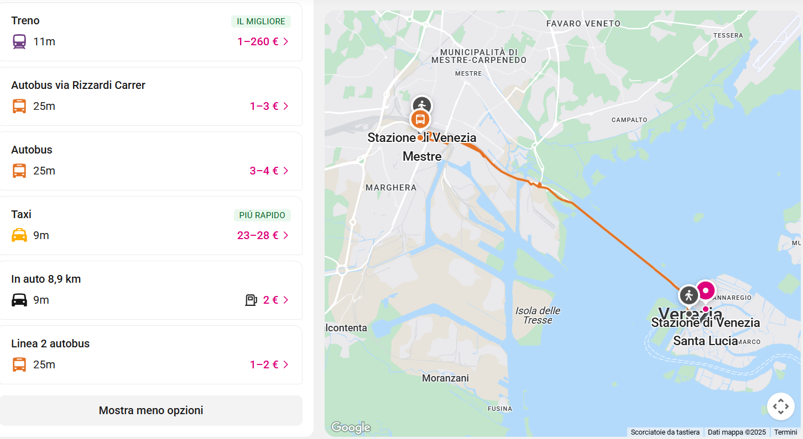
- 🚆 Venezia Santa Lucia → Firenze S. M. Novella (≈ 2–3 ч, ~€60–100/двое) 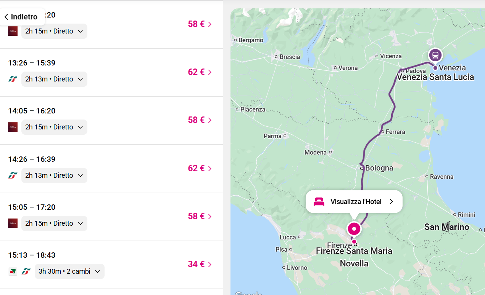
- 🏨 Отель/хостел во Флоренции: ≈ €120 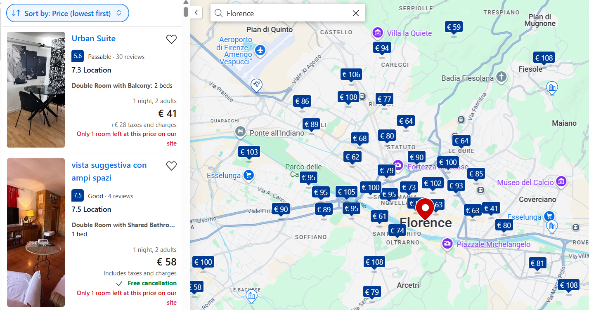
Прогулка по Венеции утром (≈ 3–4 км, 2–3 часа)
- 1
Stazione Venezia Santa Lucia — прибытие/сдача багажа в камеру хранения.
- 2
Santa Croce — прогулка по тихим улочкам района.
- 3
Ponte di Rialto — знаменитый мост и рынок рядом.
- 4
Piazza San Marco — площадь, собор, колокольня (по желанию).
- 5
Возврат к вокзалу — пешком или вапоретто №1/2 от San Marco до Santa Lucia.
-
Поезд Venezia Santa Lucia → Firenze S. M. Novella (≈ 2–3 ч, ~€60–100/двое).
Маршрут по центру Флоренции (≈ 5–6 км, 4–6 часов)
- 1
Stazione SMN (вокзал) — оставить вещи (luggage storage) при необходимости.
- 2
Mercato Centrale — кофе/завтрак, фудкорт на 2-м этаже.
- 3
Duomo (Santa Maria del Fiore) — собор, бронь на купол по желанию.
- 4
Piazza della Signoria — Лоджия Ланци, Палаццо Веккьо.
- 5
Basilica di Santa Croce — базилика и площадь перед ней.
- 6
Уффици — музей (бронь билетов заранее желательно).
- 7
Ponte Vecchio — виды на Арно, ювелирные лавки.
- 8
Ольтрарно — узкие улочки и траттории (хорошее место на ужин).
- 9
Piazzale Michelangelo — подъём на закат, панорама города.
Где поесть (≈ €90–120/двоих за день)
- Венеция (завтрак): Caffè del Doge или Torrefazione Cannaregio — хороший кофе и круассаны.
- Флоренция (обед): Mercato Centrale — фудкорт с большим выбором.
- Флоренция (ужин): Trattoria ZaZa или Osteria All’Antico — тосканская кухня.
- Перекусы: All’Antico Vinaio (панини) и Gelateria La Carraia (мороженое вечером).
Итоги дня — расходы (на двоих)
Транспорт: Mestre → Venezia Santa Lucia~€6–10
Питание (≈ €90–120/двоих)€90–120
Поезд Venezia → Firenze SMN~€60–100
Проживание во Флоренции (1 ночь)~€130
Музеи (например, Уффици, Дуомо)~€40–60
Непредвиденные расходы€0–100
Итого за день≈ €326 – 520
Примечание: стоимость билетов в музеи указана усреднённо (можно бронировать заранее
онлайн).
День 4 — Флоренция → Рим
- 30 марта 2026 (понедельник)
- 🚆 Firenze S. M. Novella → Roma Termini (Frecciarossa/Italo, ≈ 1 ч 40 мин, ~€60–100/двое) 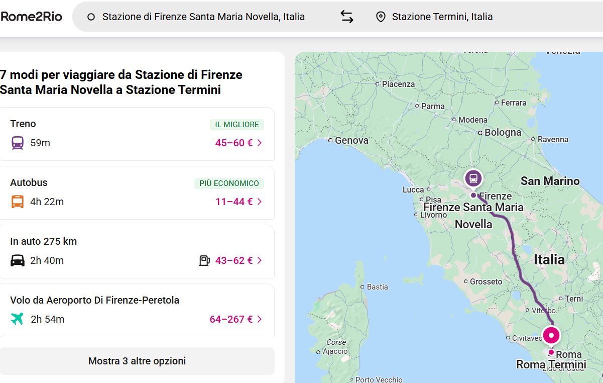
- 🏨 Отель в Риме (центр / Трастевере / у Termini): ≈ €140 за ночь

План дня
- Чекаут из отеля во Флоренции — при необходимости оставь вещи в luggage room/камере хранения.
- Кофе + быстрый ланч (например, Mercato Centrale) — паста/панини перед поездом.
- Поезд в Рим — Firenze SMN → Roma Termini (выезжать удобно в диапазоне 12:00–15:00).
- Заселение — отель поближе к метро/вокзалу или в Трастевере.
- Вечерняя прогулка — компактный маршрут по центру (см. ниже) + ужин.
Маршрут вечерней прогулки по Риму (≈ 5–6 км, 3–4 часа)
- 1
Отель / Roma Termini — старт.
- 2
Метро B до Colosseo — фото у Колизея и Арки Константина.
- 3
Via dei Fori Imperiali — виды на Форум и Палатин.
- 4
Piazza Venezia — Алтарь Отечества (панорама с площадки по желанию).
- 5
Fontana di Trevi — монетка на удачу.
- 6
Pantheon — осмотр снаружи в вечернем свете.
- 7
Piazza Navona — барочная площадь, художники.
- 8
Trastevere — ужин в траттории, узкие улочки, атмосферно.
Где поесть (≈ €90–120/двоих за день)
- Завтрак (Флоренция): кофе + выпечка рядом с отелем (~€10–16).
- Ланч до поезда: Mercato Centrale — паста/панини (~€20–30 на двоих).
- Ужин (Рим, Трастевере): траттория — карбонара/аматричана + бокал вина (~€45–65).
- Джелато: по пути к Треви/Навоне (~€6–10).
Итоги дня — расходы (на двоих)
Поезд Firenze → Roma~€60–100
Проживание в Риме (1 ночь)~€140
Питание (~€45–60/чел/день)€90–120
Транспорт в Риме (метро/автобус)~€8–12
Камеры хранения (по необходимости)€0–12
Непредвиденные расходы€0–100
Итого за день≈ €298 – 484
День 5 — Рим (полный день) → вечерний перелет в Вену
- 31 марта 2026 (вторник)
- 🕘 Утро: Колизей, Форум, Палатин (вход по времени)
- 🕒 День: Ватикан — Собор Святого Петра / Музеи (по желанию — заранее бронь)
- 🛫 Вечер: Рим → Вена (поздний рейс)
или 🚆 ночной поезд/пересадка
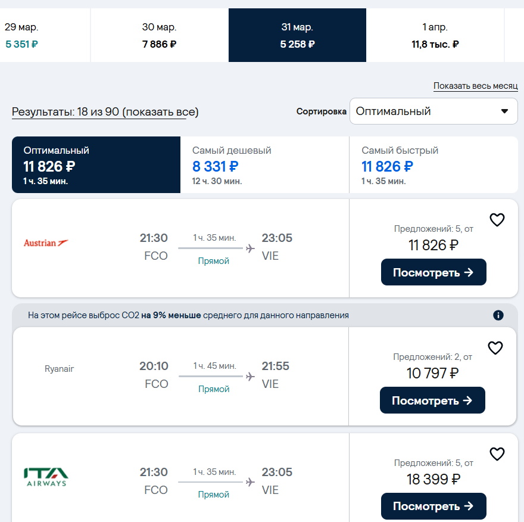
- 🛫 Ночь: Вена — заселение в отель 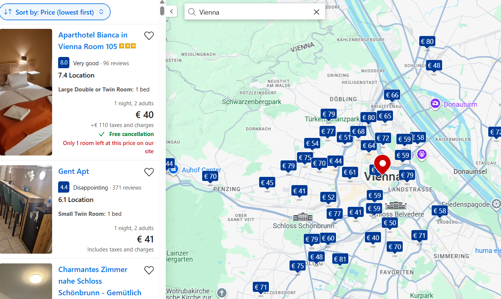
Маршрут утра: Античный Рим (≈ 4–5 км, 3–4 часа)
- 1
Colosseo (вход по слоту) — аудиогид по желанию.
- 2
Arco di Costantino — фото-точка.
- 3
Roman Forum — по основным руинам и табличкам.
- 4
Palatino — смотровые на Форум.
- 5
Кофе/ланч — рядом с Форумом (см. «Где поесть»).
Лайфхак: комбинированный билет «Колизей + Форум + Палатин» с тайм-слотом на Колизей утром.
Маршрут дня: Ватикан (≈ 3–4 км, 3–5 часов)
- A
Piazza San Pietro — колоннада Бернини.
- B
Basilica di San Pietro — вход бесплатный; подъём на купол по желанию (~€8–10/чел).
- C
Vatican Museums (по желанию) — бронь онлайн. Финал: Сикстинская капелла.
- D
Castel Sant’Angelo (снаружи) — фото у моста.
Если музеи не планируем, лучше оставить больше времени на купол и прогулку по набережной Тибра.
Где поесть (≈ €90–130/двоих за день)
- Завтрак: Panella – L’Arte del Pane (рядом с Vittorio Emanuele) — кофе + корнетто (~€10–14).
- Ланч у Форума: La Prezzemolina (пицца al taglio) или La Taverna dei Fori Imperiali (паста) (~€25–40).
- Перекус у Ватикана: Pizzarium Bonci (легендарная пицца) или Pastasciutta (быстрая паста) (~€18–28).
- Джелато: Old Bridge Gelateria у Ватикана (~€6–10).
- Перед вылетом: лёгкий ужин/панини по дороге в аэропорт/на вокзал (~€20–30).
Итоги дня — расходы (на двоих)
Билет: Колизей + Форум + Палатин~€40–60
Купол Св. Петра (по желанию)~€16–20
Ватиканские музеи (по желанию)~€40–60
Питание (день)~€90–130
Транспорт (метро/автобус)~€8–12
Перелёт Рим → Вена (поздний) / поезд~€120–300
Непредвиденные расходы€0–100
Итого за день≈ €314 – 682
Диапазоны зависят от выбора музеев/перелёта. Можно удешевить, пропустив музеи и
выбрав ранний лоукост.
День 6 — Вена → (коротко) Мюнхен → вечерний перелет в Амстердам
- 1 апреля 2026 (среда)
- 🛏 Ночь Дня 5: сон в Вене. Утром — быстрый обзор центра и Шёнбрунна.
- 🚆 Днём поезд: Railjet/EC Wien Hbf → München Hbf (≈ 4 ч 3 мин, ~€60–120/двое).
- 🌃 Вечер: короткая прогулка и ужин в Мюнхене (без ночёвки).
- ✈️/🚆 Поздний вылет/выезд: Мюнхен → Амстердам (прилет/прибытие поздно вечером/ночью). Ночёвка — Амстердам. (~€100–160) 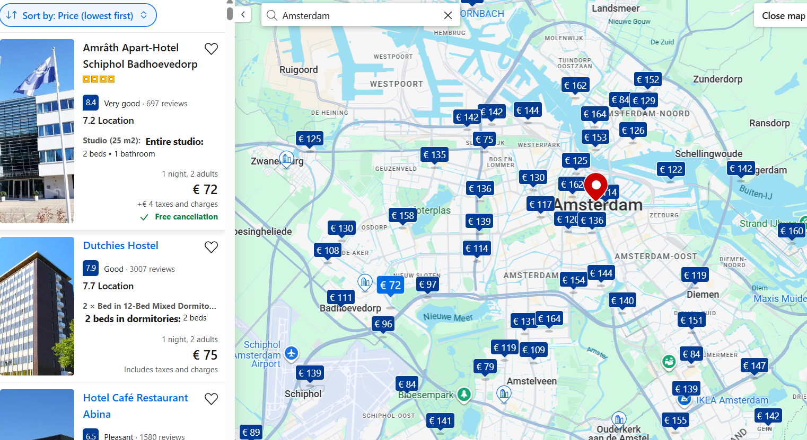
Вена — маршрут до обеда (≈ 6–7 км, 4–5 ч)
- 1
Stephansplatz — собор Св. Стефана.
- 2
Graben → Kohlmarkt — к Хофбургу.
- 3
Hofburg — внешний осмотр.
- 4
Ringstraße — Опера/Ратуша (по пути).
- 5
Naschmarkt — ланч.
- 6
Schönbrunn — сад и фасад (60–90 мин).
- 7
Wien Hbf — поезд на Мюнхен.
Мюнхен (вечер, 2–3 ч, без ночёвки)
- A
München Hbf — прибытие, пересадка на S-Bahn.
- B
Marienplatz — ратуша.
- C
Viktualienmarkt — быстрый перекус.
- D
Hofbräuhaus / Augustiner — ужин и пиво.
- E
Englischer Garten (вход) — если есть силы.
Дальше — в аэропорт/на ночной поезд.
Логистика Мюнхен → Амстердам
- ✈️ Самолёт (быстрее): MUC → AMS поздним вылетом (обычно 1:30–1:40 в воздухе + дорога в аэропорт). Ночёвка — Амстердам.
- 🚆 Поезд (дольше): вечерний ICE/IC с 1–2 пересадками → прибытие после полуночи/под утро. Ночёвка — Амстердам.
Где поесть (≈ €90–120/двоих за день)
- Вена (завтрак): кофе + штрудель рядом с размещением (~€12–18).
- Вена (ланч): Naschmarkt — уличные закуски/азиатская кухня (~€25–40).
- Мюнхен (ужин): Hofbräuhaus или Augustiner — шницель/колбаски + пиво (~€45–60).
- Перекусы/вода в дороге: ~€6–12.
Итоги дня — расходы (на двоих)
Поезд: Вена → Мюнхен~€60–120
Питание (день)~€90–120
Городской транспорт (Вена+Мюнхен)~€12–20
Перелёт/поезд: Мюнхен → Амстердам✈️ ~€140–280 · 🚆 ~€120–220
Проживание (Амстердам, 1 ночь)~€100–160
Непредвиденные€0–80
Итого за день≈ €402 – 700
Ночёвка в Амстердаме, чтобы утром Дня 7 сразу начать прогулку.
День 7 — Амстердам → Париж (вечером/ночью)
- 2 апреля 2026 (четверг)
- 🛏 Ночь Дня 6: Амстердам (уже заселены).
- 🚶 День: прогулка по центру + каналы / музеи (по желанию).
- 🚆 Вечером: поезд Eurostar/Thalys Amsterdam Centraal → Paris Gare du Nord (≈ 3 ч 20 м, ~€160–220/двое).
- 🏨 Ночёвка: Париж (≈ €120–180). 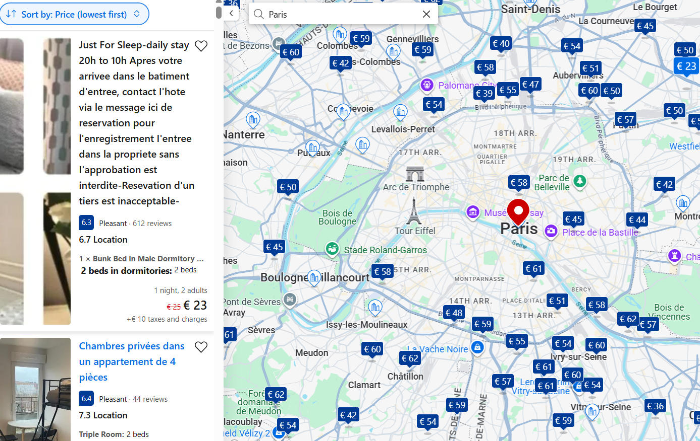
Маршрут по Амстердаму (≈ 6–8 км, 5–6 часов)
- 1
Dam Square — старт и ориентир.
- 2
Jordaan — атмосфера каналов.
- 3
Anne Frank Huis — осмотр снаружи (внутрь по брони).
- 4
De 9 Straatjes — кофе и небольшие магазины.
- 5
Bloemenmarkt — плавучий рынок цветов.
- 6
Rijksmuseum / Van Gogh — один музей по желанию.
- 7
Vondelpark — короткая пауза в парке.
- 8
Amsterdam Centraal — поезд в Париж.
По времени удобно: музей до 2 ч, круиз по каналам — ~1 ч (см. ниже).
Где поесть (≈ €100–130/двоих за день)
- Завтрак: Winkel 43 (яблочный пирог) или кафе в Jordaan (~€16–22).
- Ланч: Foodhallen (стритфуд, большой выбор) (~€30–45).
- Кофе/сладкое: Van Wonderen Stroopwafels (~€8–12).
- Ранний ужин: индонезийский Restaurant Blauw или Sama Sebo (~€38–55).
- По желанию: круиз по каналам (~€40 на двоих).
Итоги дня — расходы (на двоих)
Питание~€100–130
Круиз по каналам (опция)~€40
Музей (1, опция)~€40–60
Городской транспорт~€10–15
Поезд: Амстердам → Париж~€160–220
Проживание (Париж)~€120–180
Непредвиденные€0–80
Итого за день≈ €430 – 725
Сэкономить можно, отказавшись от музея и выбрав ранний ланч вместо ужина.
День 8 — Париж → Лион
- 3 апреля 2026 (пятница)
- 🚶 Утро: «лайт-Париж» — центр и фото-точки.
- 🚅 Днём: TGV Paris (Gare de Lyon) → Lyon Part-Dieu (≈ 2 ч, ~€100–150/двое).
- 🍴 Ранний ужин: bouchon в Лионе.
Париж утром (≈ 5–6 км, 4–5 часов)
- 1
Notre-Dame (снаружи) — старт на Île de la Cité.
- 2
Sainte-Chapelle (по желанию, быстрый визит).
- 3
Louvre (двор и пирамида) — фото-стоп.
- 4
Tuileries → Place de la Concorde — прогулка по саду.
- 5
Arc de Triomphe — короткий заход (подъём по желанию).
- 6
Метро к Gare de Lyon — посадка на TGV в Лион.
Лион (ночь, 2–3 часа)
- A
Place Bellecour — центр.
- B
Vieux Lyon — улочки и трабулли.
- C
Cathédrale Saint-Jean — фотостоп.
- D
Bouchon lyonnais — ужин перед вылетом.
Где поесть
- Париж (завтрак): булочная рядом с отелем — круассан + café (~€10–16).
- Париж (ранний ланч): Bouillon Chartier или L’As du Fallafel (~€25–40).
- Лион (ужин): bouchon — quenelles, salade lyonnaise (~€45–65/двоих).
Итоги дня — расходы (на двоих)
Питание (день)~€110–140
Транспорт: Париж (метро/RER)~€12–18
TGV: Париж → Лион~€100–150
Перелёт: Лион → Подгорица~€180–260
Непредвиденные€0–80
Итого за день≈ €402 – 648
Итоги путешествия — расходы (на двоих)
День 1 — Подгорица → Любляна≈ €294 – 428
День 2 — Любляна → Блед → Венеция≈ €344 – 494
День 3 — Венеция → Флоренция≈ €326 – 520
День 4 — Флоренция → Рим≈ €298 – 484
День 5 — Рим → Вена≈ €314 – 682
День 6 — Вена → Мюнхен → Амстердам≈ €402 – 700
День 7 — Амстердам → Париж≈ €430 – 725
День 8 — Париж → Лион≈ €402 – 648
Сумма за всю поездку
≈ €2,810 – €4,681
- Средний прогноз: ~ €3,746 (входит в наш бюджет €4,000).
- Запас до бюджета (средний сценарий): ~€255.
- Если всё пройдёт по минимуму: сэкономим ~€1,190; по максимуму: потребуется +€681 сверх бюджета.
- Диапазоны включают «непредвиденные» из ежедневных расчетов и опциональные активности (музеи/каналы/подъёмы).